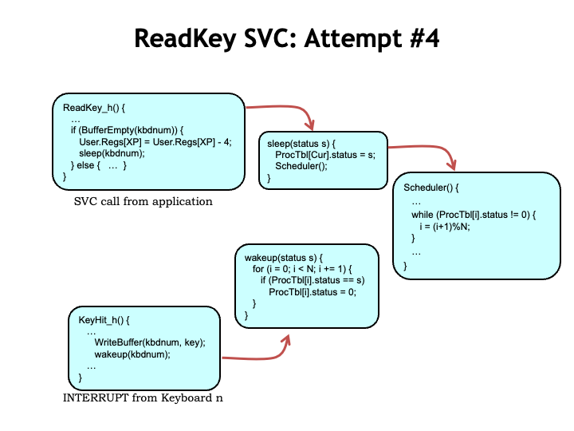

Dealing with I/O Devices
Letʼs turn our attention to how the operating system (OS) deals with input/output devices. There are actually two parts to the discussion. First, weʼll talk about how the OS interacts with the devices themselves. This will involve a combination of interrupt handlers and kernel buffers. Then weʼll discuss how supervisor calls access the kernel buffers in response to requests from user-mode processes. As weʼll see, this can get a bit tricky when the OS cannot complete the request at the time the SVC was executed.
Hereʼs the plan! When the user types a key on the keyboard, the keyboard triggers an interrupt request to the CPU. The interrupt suspends execution of the currently-running process and executes the handler whose job it is to deal with this particular I/O event.
In this case, the keyboard handler reads the character from the keyboard and saves it in a kernel buffer associated with the process that has been chosen to receive incoming keystrokes. In the language of OSes, weʼd say that process has the keyboard focus. This transfer takes just a handful of instructions and when the handler exits, we resume running the interrupted process.
Assuming the interrupt request is serviced promptly, the CPU can easily keep up with the arrival of typed characters. Humans are pretty slow compared to the rate of executing instructions! But the buffer in the kernel can hold only so many characters before it fills up. What happens then?
Well, there are a couple of choices. Overwriting characters received earlier doesnʼt make much sense: why keep later characters if the earlier ones have been discarded. Better that the CPU discard any characters received after the buffer was full, but it should give some indication that itʼs doing so. And, in fact, many systems beep at the user to signal that the character theyʼve just typed is being ignored.
At some later time, a user-mode program executes a ReadKey() supervisor call, requesting that the OS return the next character in R0. In the OS, the ReadKey SVC handler grabs the next character from the buffer, places it in the userʼs R0, and resumes execution at the instruction following the SVC.
There are few tricky bits we need to figure out. The ReadKey() SVC is what we call a “blocking I/O” request, i.e., the program assumes that when the SVC returns, the next character is in R0. If there isnʼt (yet) a character to be returned, execution should be “blocked”, i.e., suspended, until such time that a character is available.
Many OSes also provide for non-blocking I/O requests, which always return immediately with both a status flag and a result. The program can check the status flag to see if there was a character and do the right thing if there wasnʼt, e.g., reissue the request at a later time.
Note that the user-mode program didnʼt have any direct interaction with the keyboard, i.e., itʼs not constantly polling the device to see if thereʼs a keystroke to be processed. Instead, weʼre using an “event-driven” approach, where the device signals the OS, via an interrupt, when it needs attention.
This is an elegant separation of responsibilities. Imagine how cumbersome it would be if every program had to check constantly to see if there were pending I/O operations. Our event-driven organization provides for on-demand servicing of devices, but doesnʼt devote CPU resources to the I/O subsystem until thereʼs actually work to be done. The interrupt-driven OS interactions with I/O devices are completely transparent to user programs.
Hereʼs sketch of what the OS keyboard handler code might actually look like. Depending on the hardware, the CPU might access device status and data using special I/O instructions in the ISA. For example, in the simulated Beta used for lab assignments, thereʼs a RDCHAR() instruction for reading keyboard characters and a CLICK() instruction for reading the coordinates of a mouse click.
Another common approach is to use “memory-mapped I/O”, where a portion of the kernel address space is devoted to servicing I/O devices. In this scheme, ordinary LD and ST store instructions are used to access specific addresses, which the CPU recognizes as accesses to the keyboard or mouse device interfaces. This is the scheme shown in the code here. The C data structure represents the two I/O locations devoted to the keyboard: one for status and one for the actual keyboard data.
The keyboard interrupt handler reads the keystroke data from the keyboard and places the character into the next location in the circular character buffer in the kernel.
In real life keyboard processing is usually a bit more complicated. What one actually reads from a keyboard is a key number and a flag indicating whether the event is a key press or a key release. Knowing the keyboard layout, the OS translates the key number into the appropriate ASCII character, dealing with complications like holding down the shift key or control key to indicate a capital character or a control character. And certain combination of keystrokes, e.g., CTRL-ALT-DEL on a Windows system, are interpreted as special user commands to start running particular applications like the Task Manager. Many OSes let the user specify whether they want “raw” keyboard input (i.e., the key numbers and status) or “digested” input (i.e., ASCII characters).
Whew! Who knew that processing keystrokes could be so complicated!
Next, weʼll figure out how to code the associated supervisor call that lets user programs read characters.
Interrupt Handlers
When a user-mode program wants to read a typed character it executes a ReadKey() SVC. The binary representation of the SVC has an illegal value in the opcode field, so the CPU hardware causes an exception, which starts executing the illegal opcode handler in the OS. The OS handler recognizes the illegal opcode value as being an SVC and uses the low-order bits of the SVC instruction to determine which sub-handler to call.
Hereʼs our first draft for the ReadKey sub-handler, this time written in C. The handler starts by looking at the process table entry for the current process to determine which keyboard buffer holds the characters for the process. Letʼs assume for the moment the buffer is *not* empty and skip to the last line, which reads the character from the buffer and uses it to replace the saved value for the userʼs R0 in the array holding the saved register values. When the handler exits, the OS will reload the saved registers and resume execution of the user-mode program with the just-read character in R0.
Now letʼs figure what to do when the keyboard buffer is empty. The code shown here simply loops until the buffer is no longer empty. The theory is that eventually the user will type a character, causing an interrupt, which will run the keyboard interrupt handler discussed in the previous section, which will store a new character into the buffer.
This all sounds good until we remember that the SVC handler is running with the supervisor bit (PC[31]) set to 1, disabling interrupts. Oops! Since the keyboard interrupt will never happen, the while loop shown here is actually an infinite loop. So if the user-mode program tries to read a character from an empty buffer, the system will appear to hang, not responding to any external inputs since interrupts are disabled. Time to reach for the power switch :)
Weʼll fix the looping problem by adding code to subtract 4 from the saved value of the XP register before returning. How does this fix the problem?
Recall that when the SVC illegal instruction exception happened, the CPU stored the PC+4 value of the illegal instruction in the userʼs XP register. When the handler exits, the OS will resume execution of the user-mode program by reloading the registers and then executing a JMP(XP), which would normally then execute the instruction *following* the SVC instruction. By subtracting 4 from the saved XP value, it will be the SVC itself that gets re-executed.
That, of course, means weʼll go through the same set of steps again, repeating the cycle until the keyboard buffer is no longer empty. Itʼs just a more complicated loop! But with a crucial difference: one of the instructions — the ReadKey() SVC — is executed in user-mode with PC[31] = 0. So during that cycle, if thereʼs a pending interrupt from the keyboard, the device interrupt will supersede the execution of the ReadKey() and the keyboard buffer will be filled. When the keyboard interrupt handler finishes, the ReadKey() SVC will be executed again, this time finding that the buffer is no longer empty. Yay!
So this version of the handler actually works, with one small caveat. If the buffer is empty, the user-mode program will continually re-execute the complicated user-mode/kernel-mode loop until the timer interrupt eventually transfers control to the next process. This seems pretty inefficient. Once weʼve checked and found the buffer is empty, it would be better to give other processes a chance to run before we try again.
This problem is easy to fix! Weʼll just add a call to Scheduler() right after arranging for the ReadKey() SVC to be re-executed. The call to Scheduler() suspends execution of the current process and arranges for the next process to run when the handler exits. Eventually the round-robin scheduling will come back to the current process and the ReadKey() SVC will try again.
With this simple one-line fix the system will spend much less time wasting cycles checking the empty buffer and instead use those cycles to run other, hopefully more productive, processes. The cost is a small delay in restarting the program after a character is typed, but typically the time slices for each process are small enough that one round of process execution happens more quickly than the time between two typed characters, so the extra delay isnʼt noticeable.
So now we have some insights into one of the traditional arguments against timesharing. The argument goes as follows. Suppose we have 10 processes, each of which takes 1 second to complete its computation. Without timesharing, the first process would be done after 1 second, the second after 2 seconds, and so on. With timesharing using, say, a 1/10 second time slice, all the processes will complete sometime after 10 seconds since thereʼs a little extra time needed for the hundred or so process switches that would happen before completion. So in a timesharing system the time-to-completion for *all* processes is as long the worst-case completion time without time sharing! So why bother with timesharing?
We saw one answer to this question earlier in this slide. If a process canʼt make productive use of its time slice, it can donate those cycles to completion of some other task. So in a system where most processes are waiting for some sort of I/O, timesharing is actually a great way of spending cycles where theyʼll do the most good.
If you open the Task Manager or Activity Monitor on the system youʼre using now, youʼll see there are hundreds of processes, almost all of which are in some sort of I/O wait. So timesharing does extract a cost when running compute-intensive computations, but in an actual system where thereʼs a mix of I/O and compute tasks, time sharing is the way to go.
We can actually go one step further to ensure we donʼt run processes waiting for an I/O event that hasnʼt yet happened. Weʼll add a status field to the process state indicating whether the process is ACTIVE (e.g., status is 0) or WAITING (e.g., status is non-zero). Weʼll use different non-zero values to indicate what event the process is waiting for. Then weʼll change the Scheduler() to only run ACTIVE processes.
To see how this works, itʼs easiest to use a concrete example. The UNIX OS has two kernel subroutines: sleep() and wakeup() both of which require a non-zero argument. The argument will be used as the value of the status field. Letʼs see this in action.

When the ReadKey() SVC detects the buffer is empty, it calls sleep() with an argument that uniquely identifies the I/O event itʼs waiting for, in this case the arrival of a character in a particular buffer. sleep() sets the process status to this unique identifier, then calls Scheduler().
Scheduler() has been modified to skip over processes with a non-zero status, not giving them a chance to run. Meanwhile, a keyboard interrupt will cause the interrupt handler to add a character to the keyboard buffer and call wakeup() to signal any process waiting on that buffer. Watch what happens when the kbdnum in the interrupt handler matches the kbdnum in the ReadKey() handler.
wakeup() loops through all processes, looking for ones that are waiting for this particular I/O event. When it finds one, it sets the status for the process to zero, marking it as ACTIVE. The zero status will cause the process to run again next time the Scheduler() reaches it in its round-robin search for things to do.
The effect is that once a process goes to sleep() WAITING for an event, itʼs not considered for execution again until the event occurs and wakeup() marks the process as ACTIVE. Pretty neat! Another elegant fix to ensure that no CPU cycles are wasted on useless activity. I can remember how impressed I was when I first saw this many years ago in a (very) early version of the UNIX code :)
Exmaple: Match Handler to OS

Hereʼs an old quiz problem we can use to test our understanding of all the factors that went into the final design of our ReadKey() SVC code. Weʼre considering three different versions (R1, R2, and R3) of the ReadKey() SVC code, all variants of the various attempts from the previous section. And there are three types of systems (Models A, B, and C). Weʼve been asked to match the three handlers to the appropriate system.
Looking at R1, we see itʼs similar to Attempt #2 from the previous section, except it always reads from the same keyboard regardless of the process making the SVC request. That wouldnʼt make much sense in a timesharing system since a single stream of input characters would be shared across all the processes. So this handler must be intended for the Model C system, which has only a single process.
Looking at R2, we see itʼs similar to Attempt #1 from the previous section, which had the fatal flaw of a potentially infinite loop if attempting to read from an empty buffer. So this code would only run successfully on the Model B system, which *does* allow device interrupts even when the CPU is running inside an SVC call. So the keyboard interrupt would interrupt the while loop in R2 and the next iteration of the loop would discover that buffer was no longer empty.
By the process of elimination that leaves the R3 handler to be paired with the Model A system. R3 is Attempt #3 from the previous section and is designed for our standard system in which the kernel is uninterruptible.
The problem goes on to say that a fumble-fingered summer intern has jumbled up the disks containing the handlers and sent an unknown handler version to each user running one of the three model systems. To atone for the mistake, heʼs been assigned the task of reading various user messages sent after the user has tried the new handler disk on their particular system. Based on the message, heʼs been asked to identify which handler disk and system the user is using.
The first message says “I get compile-time errors; Scheduler and ProcTbl are undefined.”
On the right of the slide weʼve included a table enumerating all the combinations of handlers and systems, where weʼve X-ed the matches from the previous slide since they correspond to when the new handler would be the same as the old handler and the user wouldnʼt be sending a message!
The phrase “Scheduler and ProcTbl are undefined” wouldnʼt apply to a timesharing system, which includes both symbols. So we can eliminate the first two columns from consideration. And we can also eliminate the second row, since handler R2 doesnʼt include a call to Scheduler.
So this message came from a user trying to run handler R3 on a Model C system. Since Model C doesnʼt support timesharing, it would have neither Scheduler nor ProcTbl as part the OS code.
Okay, hereʼs the next message: “Hey, now the system always reads everybodyʼs input from keyboard 0. Besides that, it seems to waste a lot more CPU cycles than it used to.”
R1 is the only handler that always reads from keyboard 0, so we can eliminate rows 2 and 3.
So how can we tell if R1 is being run on a Model A or a Model B system. The R1 handler wastes a lot of cycles looping while waiting for a character to arrive and the implication is that was a big change for the user since theyʼre complaining that running R1 is wasting time compared to their previous handler. If the user had been running R2 on a model B system, theyʼre already used to the performance hit of looping and so wouldnʼt have noticed a performance difference switching to R1, so we can eliminate Model B from consideration.
So this message came from a user running handler R1 on a model A system.
The final message reads “Neat, the new system seems to work fine. It even wastes less CPU time than it used to!”
Since the system works as expected with the new handler, we can eliminate a lot of possibilities.
Handler R1 wouldnʼt work fine on a timesharing system since the user could tell that the processes were now all reading from the same keyboard buffer, so we can eliminate R1 on Models A and B.
And handlers R2 and R3 wouldnʼt work on a Model C system since that doesnʼt include process tables or scheduling, eliminating the right-most column.
Finally handler R2 wouldnʼt work on a Model A system with its uninterruptible kernel since any attempt to read from an empty buffer would cause an infinite loop.
So, the message must have been sent by a Model B user now running R3.
Well, that was fun! Just like solving the logic puzzles you find in games magazines :)
So far in constructing our timesharing system, weʼve worked hard to build an execution environment that gives each process the illusion of running on its own independent virtual machine. The processes appear to run concurrently although weʼre really quickly switching between running processes on a single hardware system. This often leads to better overall utilization since if a particular process is waiting for an I/O event, we can devote the unneeded cycles to running other processes.
The downside of timesharing is that it can be hard to predict exactly how long a process will take to complete since the CPU time it will receive depends on how much time the other processes are using. So weʼd need to know how many other processes there are, whether theyʼre waiting for I/O events, etc. In a timesharing system we canʼt make any guarantees on completion times.
And we chose to have the OS play the intermediary between interrupt events triggered by the outside world and the user-mode programs where the event processing occurs. In other words, weʼve separated event handling (where the data is stored by the OS) and event processing (where the data is passed to user-mode programs via SVCs).
This means that using a conventional timesharing system, itʼs hard to ensure that event processing will be complete by a specified event deadline, i.e., before the end of a specified time period after the event was triggered.
Since modern CPU chips provide inexpensive, high-performance, general-purpose computing, they are often used as the “brains” of control systems where deadlines are a fact of life.
For example, consider the electronic stability control (ESC) system on modern cars. This system helps drivers maintain control of their vehicle during steering and braking maneuvers by keeping the car headed in the driverʼs intended direction. The computer at the heart of the system measures the forces on the car, the direction of steering, and the rotation of the wheels to determine if thereʼs been a loss of control due to a loss of traction, i.e., is the car “spinning out”? If so, the ESC uses rapid automatic braking of individual wheels to prevent the carʼs heading from veering from the driverʼs intended heading. With ESC you can slam on your brakes or swerve to avoid an obstacle and not worry that the car will suddenly fishtail out of control. You can feel the system working as a chatter in the brakes.
To be effective, the ESC system has to guarantee the correct braking action at each wheel within a certain time of receiving dangerous sensor settings. This means that it has to be able to guarantee that certain subroutines will run to completion within some predetermined time of a sensor event. To be able to make these guarantees weʼll have to come up with a better way to schedule process execution — round-robin scheduling wonʼt get the job done! Systems that can make such guarantees are called “real-time systems”.
One measure of performance in a real-time system is the interrupt latency L, the amount of time that elapses between a request to run some code and when that code actually starts executing. If thereʼs a deadline D associated with servicing the request, we can compute the maximum allowable latency that still permits the service routine to complete by the deadline. In other words, whatʼs the largest L such that $L_{\textrm{max}}+S = D$?
Bad things can happen if we miss certain deadlines. Maybe thatʼs why we call them “dead”-lines :) In those cases we want our real time system to guarantee that the actual latency is always less than the maximum allowable latency. These critical deadlines give rise to what we call “hard real-time constraints”.
What factors contribute to interrupt latency?
Well, while handling an interrupt it takes times to save the process state, switch to the kernel context, and dispatch to the correct interrupt handler. When writing our OS, we can work to minimize the amount of code involved in the setup phase of an interrupt handler.
We also have to avoid long periods of time when the processor cannot be interrupted. Some ISAs have complex multi-cycle instructions, e.g., block move instructions where a single instruction makes many memory accesses as it moves a block of data from one location to another. In designing the ISA, we need to avoid such instructions or design them so that they can be interrupted and restarted.
The biggest problem comes when weʼre executing another interrupt handler in kernel mode. In kernel mode, interrupts are disabled, so the actual latency will be determined by the time it takes to complete the current interrupt handler in addition to the other costs mentioned above. This latency is not under the control of the CPU designer and will depend on the particular application. Writing programs with hard real-time constraints can get complicated!
Our goal is to bound and minimize interrupt latency. Weʼll do this by optimizing the cost of taking an interrupt and dispatching to the correct handler code. Weʼll avoid instructions whose execution time is data dependent. And weʼll work to minimize the time spent in kernel mode.
But even with all these measures, weʼll see that in some cases weʼll have to modify our system to allow interrupts even in kernel mode.
Next weʼll look at some concrete examples and see what mechanisms are required to make guarantees about hard real-time constraints.
Interrupt Priotities and Preemption
Suppose we have a real-time system supporting three devices: a keyboard whose interrupt handler has a service time of 800 us, a disk with a service time of 500 us, and a printer with a service time of 400 us.
What is the worst-case latency seen by each device? For now weʼll assume that requests are infrequent, i.e., that each request only happens once in each scenario. Requests can arrive at any time and in any order. If we serve the requests in first-come-first-served order, each device might be delayed by the service of all other devices.
So the start of the keyboard handler might be delayed by the execution of the disk and printer handlers, a worst-case latency of 900 us.
The start of the disk handler might be delayed by the keyboard and printer handlers, a worst-case latency of 1200 us.
And the printer handler might be delayed by the keyboard and disk handlers, a worst-case latency of 1300 us.
In this scenario we see that long-running handlers have a huge impact on the worst-case latency seen by the other devices. What are the possibilities for reducing the worst-case latencies? Is there a better scheduling algorithm than first-come-first-served?
One strategy is to assign priorities to the pending requests and to serve the requests in priority order. If the handlers are uninterruptible, the priorities will be used to select the *next* task to be run at the completion of the current task. Note that under this strategy, the current task always runs to completion even if a higher-priority request arrives while itʼs executing. This is called a “nonpreemptive” or “weak” priority system.
Using a weak priority system, the worst-case latency seen by each device is the worst-case service time of all the other devices (since that handler may have just started running when the new request arrives), plus the service time of all higher-priority devices (since theyʼll be run first).
In our example, suppose we assigned the highest priority to the disk, the next priority to the printer, and the lowest priority to the keyboard.
The worst-case latency of the keyboard is unchanged since it has the lowest priority and hence can be delayed by the higher-priority disk and printer handlers.
The disk handler has the highest priority and so will always be selected for execution after the current handler completes. So its worst-case latency is the worst-case service time for the currently-running handler, which in this case is the keyboard, so the worst-case latency for the disk is 800 us. This is a considerable improvement over the first-come-first-served scenario.
Finally the worst-case scenario for the printer is 1300 us since it may have to wait for the keyboard handler to finish running (which can take up to 800 us) and then for a higher-priority disk request to be serviced (which takes 500 us).
How should priorities be assigned given hard real-time constraints? Weʼll assume each device has a service deadline D after the arrival of its service request.
If not otherwise specified, assume D is the time until the *next* request for the same device. This is a reasonably conservative assumption that prevents the system from falling further and further behind. For example, it makes sense that the keyboard handler should finish processing one character before the next arrives.
“Earliest Deadline” is a strategy for assigning priorities that is guaranteed to meet the deadlines if any priority assignment can meet the deadlines. Itʼs very simple: Sort the requests by their deadlines. Assign the highest priority to the earliest deadline, second priority to the next deadline, and so on. A weak priority system will choose the pending request with the highest priority, i.e., the request that has the earliest deadline.
Earliest Deadline has an intuitive appeal. Imagine standing in a long security line at the airport. It would make sense to prioritize the processing of passengers who have the earliest flights assuming that thereʼs enough time to process everyone before their flight leaves. Processing 10 people whose flights leave in 30 minutes before someone whose flight leaves in 5 min will cause that last person to miss their flight. But if that person is processed first, the other passengers may be slightly delayed but everyone will make their flight. This is the sort of scheduling problem that Earliest Deadline and a weak priority system can solve.
Itʼs outside the scope of our discussion, but itʼs interesting to think about what should happen if some flights are going to be missed. If the system is overloaded, prioritizing by earliest deadline may mean that everyone will miss their flights! In this scenario it might be better to assign priorities to the minimize the total number of missed flights. This gets complicated in a hurry since the assignment of priorities now depends on exactly what requests are pending and how long it will take them to be serviced. An intriguing problem to think about!
In a weak priority system the currently-running task will always run to completion before considering what to run next. This means the worst-case latency for a device always includes the worst-case service time across all the other devices, i.e., the maximum time we have to wait for the currently-running task to complete.
If thereʼs a long-running task that usually means it will be impossible to meet tight deadlines for other tasks. For example, suppose disk requests have a 800 us deadline in order to guarantee the best throughput from the disk subsystem. Since the disk handler service time is 500 us, the maximum allowable latency between a disk request and starting to execute the disk service routine is 300 us.
Oops! The weak priority scheme can only guarantee a maximum latency of 800 us, not nearly fast enough to meet the disk deadline. We canʼt meet the disk deadline using weak priorities.
We need to introduce a preemptive priority system that allows lower-priority handlers to be interrupted by higher-priority requests. Weʼll refer to this as a “strong” priority system. Suppose we gave the disk the highest priority, the printer second priority, and keyboard the lowest priority, just like we did before.
Now when a disk request arrives, it will start executing immediately without having to wait for the completion of the lower-priority printer or keyboard handlers. The worst-case latency for the disk has dropped to 0.
The printer can only be preempted by the disk, so itʼs worst-case latency is 500 us. Since it has the lowest priority, the worst-case latency for the keyboard is unchanged at 900 us since it might still have to wait on the disk and printer.
The good news: with the proper assignment of priorities, the strong priority system can guarantee that disk requests will be serviced by the 800 us deadline.
Weʼll need to make a small tweak to our Beta hardware to implement a strong priority system. Weʼll replace the single supervisor mode bit in PC[31] with, say, a three-bit field (PRI) in PC[31:29] that indicates which of the eight priority levels the processor is currently running at.
Next, weʼll modify the interrupt mechanism as follows. In addition to requesting an interrupt, the requesting device also specifies the 3-bit priority it was assigned by the system architect. Weʼll add a priority encoder circuit to the interrupt hardware to select the highest-priority request and compare the priority of that request (PDEV) to the 3-bit PRI value in the PC. The system will take the interrupt request only if PDEV > PRI, i.e., if the priority of the request is *higher* than the priority the system is running at.
When the interrupt is taken, the old PC and PRI information is saved in XP, and the new PC is determined by the type of interrupt and the new PRI field is set to PDEV. So the processor will now be running at the higher priority specified by the device.
A strong priority system allows low-priority handlers to be interrupted by higher-priority requests, so the worst-case latencies seen at high priorities is unaffected by the service times of lower-priority handlers.
Using strong priorities allows us to assign a high priority to devices with tight deadlines and thus guarantee their deadlines are met.
Now letʼs consider the impact of recurring interrupts, i.e., multiple interrupt requests from each device. Weʼve added a “maximum frequency” column to our table, which gives the maximum rate at which requests will be generated by each device.
The execution diagram for a strong priority system is shown below the table. Here we see there are multiple requests from each device, in this case shown at their maximum possible rate of request. Each tick on the timeline represent 100 us of real time. Printer requests occur every 1 ms (10 ticks), disk requests every 2 ms (20 ticks), and keyboard requests every 10 ms (100 ticks).
In the diagram you can see that the high-priority disk requests are serviced as soon as theyʼre received. And that medium-priority printer requests preempt lower-priority execution of the keyboard handler. Printer requests would be preempted by disk requests, but given their request patterns, thereʼs never a printer request in progress when a disk request arrives, so we donʼt see that happening here.
The maximum latency before a keyboard requests starts is indeed 900 us. But that doesnʼt tell the whole story! As you can see, the poor keyboard handler is continually preempted by higher-priority disk and printer requests and so the keyboard handler doesnʼt complete until 3 ms after its request was received! This illustrates why real-time constraints are best expressed in terms of deadlines and not latencies.
If the keyboard deadline had been less that 3 ms, even the strong priority system would have failed to meet the hard real-time constraints. The reason would be that there simply arenʼt enough CPU cycles to meet the recurring demands of the devices in the face of tight deadlines.
Speaking of having enough CPU cycles, there are several calculations we need to do when thinking about recurring interrupts.
The first is to consider how much load each periodic request places on the system. Thereʼs one keyboard request every 10 ms and servicing each request takes 800 us, which consumes 800us/10ms = 8% of the CPU. A similar calculation shows that servicing the disk takes 25% of the CPU and servicing the printer takes 40% of the CPU.
Collectively servicing all the devices takes 73% of the CPU cycles, leaving 27% for running user-mode programs. Obviously weʼd be in trouble if takes more than 100% of the available cycles to service the devices.
Another way to get in trouble is to not have enough CPU cycles to meet each of the deadlines. We need 500/800 = 67.5% of the cycles to service the disk in the time between the disk request and disk deadline.
If we assume we want to finish serving one printer request before receiving the next, the effective printer deadline is 1000 us. In 1000 us we need to be able to service one higher-priority disk request (500 us) and, obviously, the printer request (400 us). So weʼll need to use 900 us of CPU in that 1000 us interval. Whew, just barely made it!
Suppose we tried setting the keyboard deadline to 2000 us. In that time interval weʼd also need to service 1 disk request and 2 printer requests. So the total service time needed is 500 + 2*400 + 800 = 2100 us. Oops, that exceeds the 2000 us window we were given, so we canʼt meet the 2000 us deadline with the available CPU resources.
But if the keyboard deadline is 3000 us, letʼs see what happens. In a 3000 us interval we need to service 2 disk requests, 3 printer requests, and, of course, 1 keyboard request, for a total service time of 2*500 + 3*400 + 800 = 3000 us. Whew! Just made it!
Example: Priority Interrupts

Letʼs finish up by looking at two extended examples. The scenario for both examples is the control system for the International Space Station, which has to handle three recurring tasks: supply ship guidance (SSG), gyroscope control (G), and cabin pressure (CP). For each device, the table shows us the time between successive requests (the period), the service time for each request, and the service deadline for each request.
Weʼll first analyze the system assuming that itʼs using a weak priority system.
First question: What is the maximum service time for the cabin pressure task that still allows all constraints to be met? Well, the SSG task has a maximum allowable latency of 20 ms, i.e., itʼs service routine must start execution within 20 ms if it is to meet its 25 ms deadline. The G task has a maximum allowable latency of 10 ms if itʼs to meet its deadline. So no other handler can take longer than 10 ms to run or the G task will miss its deadline.
2. Give a weak priority ordering that meets the constraints. Using the earliest deadline strategy discussed earlier, the priority would be G with the highest priority, SSG with the middle priority, and CP with the lowest priority.
3. What fraction of time will the processor spend idle? We need to compute the fraction of CPU cycles need to service the recurring requests for each task. SSG takes 5/30 = 16.67% of the CPU cycles. G takes 10/40 = 25% of the CPU cycles. And CP takes 10/100 = 10% of the CPU cycles. So servicing the task requests takes 51.67% of the cycles, leaving 48.33% of the cycles unused. So the astronauts will be able to play Minecraft in their spare time :)
4. What is the worst-case delay for each task until completion of its service routine? Each task might have to wait for the longest-running lower-priority handler to complete plus the service times of any other higher-priority tasks plus, of course, its own service time.
SSG might have to wait for CP and G to complete (a total of 20 ms), then add its own service time (5 ms). So its worst-case completion time is 25 ms after the request.
G might to wait for CP to complete (10 ms), then add its own service time (10 ms) for a worst-case completion time of 20 ms.
CP might have to wait for SSG to finish (5 ms), then wait for G to run (10 ms), then add its own service time (10 ms) for a worst-case completion time of 25 ms.
Letʼs redo the problem, this timing assuming a strong priority system where, as before, G has the highest priority, SSG the middle priority, and CP the lowest priority.
1. What is the maximum service time for CP that still allows all constraints to be met? This calculation is different in a strong priority system, since the service time of CP is no longer constrained by the maximum allowable latency of the higher-priority tasks — theyʼll simply preempt CP when they need to run!
Instead we need to think about how much CPU time will be used by the SSG and G tasks in the 100 ms interval between the CP request and its deadline.
In a 100 ms interval, there might be four SSG requests (at times 0, 30, 60, and 90) and three G requests (at times 0, 40, and 80). Together these require a total of 50 ms to service. So the service time for CP can be up 50 ms and still meet the 100 ms deadline.
2. What fraction of the time will the processor spend idle? Assuming a 50 ms service time for CP, it now consumes 50% of the CPU. The other request loads are as before, so 91.67% of the CPU cycles will be spent servicing requests, leaving 8.33% of idle time.
3. What is the worst-case completion time for each task?
The G task has the highest priority, so its service routine runs immediately after the request is received and its worst-case completion time is exactly its service time.
In the 25 ms interval between an SSG request and its deadline, there might be at most one G request that will preempt execution. So the worst-case completion time is one G service time (10 ms) plus the SSG service time (5 ms).
Finally, from the calculation for problem 1, we chose the service time for the CP task so that it will complete just at its deadline of 100 ms, taking into account the service time for multiple higher-priority requests.
Summary
We covered a lot of ground in this lecture!
We saw that the computation needed for user-mode programs to interact with external devices was split into two parts. On the device-side, the OS handles device interrupts and performs the task of moving data between kernel buffers and the device. On the application side, user-mode programs access the information via SVC calls to the OS.
We worried about how to handle SVC requests that needed to wait for an I/O event before the request could be satisfied. Ultimately we came up with a sleep/wakeup mechanism that suspends execution of the process until the some interrupt routine signals that the needed information has arrived, causing the sleeping process to marked as active. Then the SVC is retried the next time the now active process is scheduled for execution.
We discussed hard real-time constraints with their latencies, service times and deadlines. Then we explored the implementation of interrupt systems using both weak and strong priorities.
Real-life computer systems usual implement strong priorities and support a modest number of priority levels, using a weak priority system to deal with multiple devices assigned to the same strong priority level. This seems to work quite well in practice, allowing the systems to meet the variety of real-time constraints imposed by their I/O devices.